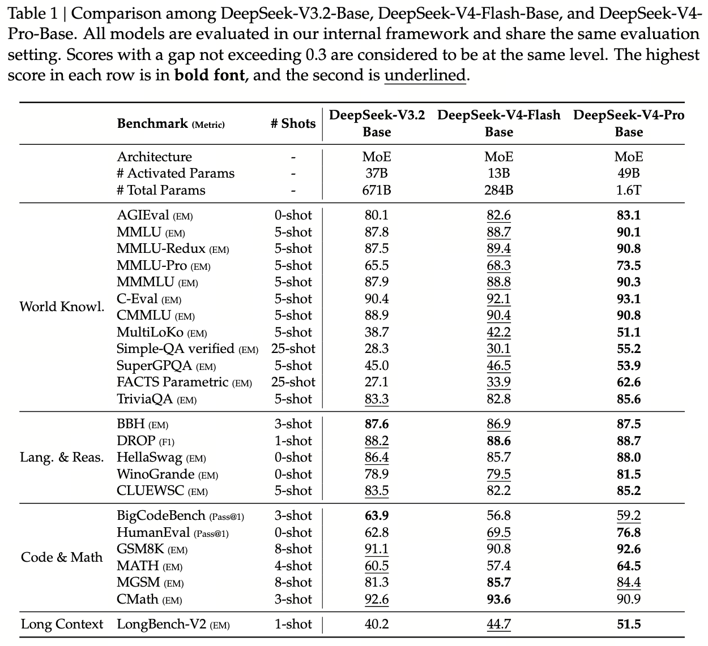

Base 评测 — 出厂前的体检
为什么 V3.2-Base 用 671B 参数、V4-Flash-Base 只用 284B 反而压过它，FACTS Parametric 从 27.1 跳到 62.6 的"知识密度跃迁"意味着什么，以及为什么 Base 评测 — 而不是后训练分数 — 决定了 OPD 蒸馏的真实 ceiling。
Base 评测 = 在 SFT/RL/OPD 全部后训练之前，对纯预训练完成的 Base 模型做的体检；目的是隔离架构红利 + 数据红利，与"对齐红利"区分开
一句话：SFT 后的分数会被对齐 trick 美化，Base 分数才是模型真实知识的"裸照"。V4 单列 Table 1 是为了让读者看清 —— Pro 在后训练前就已经把 V3.2 全面甩开，这意味着 Ch3-Ch14 累计的架构 + 数据红利是真的。
- Base Model（基座 / 预训练完成态）
- 只走完 pre-train + mid-training，没做任何 SFT / RLHF / OPD 的模型。文本输出是"补全风格"而非"对话风格"。是后训练 ceiling 的物理上限 —— 后训练只能把 Base 已有能力激发出来，不能凭空创造。
- FACTS Parametric（Google DeepMind 2024）
- 专门测模型参数里"真"事实知识浓度的 benchmark。问题：参数化知识，不允许检索，不允许推理。$\approx$ 模型脑子里到底装了多少事实。对 pre-train 数据规模与质量极敏感，对 SFT/RL 几乎不敏感 —— 这是 Base 评测的"试金石"。
- Simple-QA Verified
- 简单事实问答，验证答案精确匹配。每题只考是 / 不是，无 partial credit。对幻觉极敏感 —— 模型不知道就乱答的话，分数会塌。Pro-Base 从 28.3 跳到 55.2 说明幻觉率显著下降。
- MMLU-Pro / MMLU-Redux
- MMLU-Pro：MMLU 升级版，更难的多学科考试题，含 STEM / 人文 / 法律 / 医学。MMLU-Redux：去除 MMLU 中已知错误的修正版。主流"综合智能"指标。MMLU-Pro 比 MMLU 更难，分数更低更分散，更能区分模型能力。
- MultiLoKo（Multilingual Long-tail Knowledge）
- 多语言长尾知识 benchmark，覆盖小语种 + 文化特定知识。Pro-Base 从 38.7 跳到 51.1 直接验证 V4 数据策展"重点提升长尾文化语言"这条策略真有效。
- BBH（Big-Bench Hard, Suzgun 2022）
- Big-Bench 中 23 个被认为"对当时模型最难"的子集。主测多步推理。这一项 V4-Pro 87.5 vs V3.2 87.6 几乎打平 —— 说明纯推理能力已经接近 ceiling，再大的模型在这个 benchmark 上也只能微涨。
- LongBench-V2
- 长上下文 benchmark v2，128K-1M 上下文的问答 / 总结 / 代码任务。对 V4 的 CSA / HCA 是命门测试。Pro 从 V3.2 的 40.2 跳到 51.5（+11），证明 sparse attention 不只是"省 KV"，而是真的把长上下文能力提上去了。
- 知识密度（Knowledge Density / Tokens-per-Parameter）
- 非正式概念：相同参数量下能"记住"多少事实。$\propto$ 训练 token 数 / 激活参数数。V4-Flash 32T / 13B ≈ 2461 tokens/param，远高于 V3.2 14.8T / 37B ≈ 400。这是 Flash 用更少参数赢更多 benchmark 的核心解释。
- Ceiling（后训练上限）
- OPD（Ch18 反向 KL 蒸馏）的产出 = $\min$(student capacity, teacher knowledge)。Base 知识不够，再好的 teacher 蒸馏后学生也只能"知其名不知其详"。Pro-Base 的 FACTS +35.5 直接定义了 OPD 能蒸出多大的 Pro-Max。
1. 三模型同框：V3.2 / V4-Flash / V4-Pro
V4 报告的核心对比表 Table 1 把三个 Base 模型放在一起：
- V3.2-Base：671B 总参 / 37B 激活，14.8T tokens；
- V4-Flash-Base：284B 总参 / 13B 激活（< V3.2 一半），32T tokens；
- V4-Pro-Base：1.6T 总参 / 49B 激活，33T tokens。
这种三方对比的实验设计意图很清晰：Flash 与 V3.2 比"架构 + 数据红利"（参数减少但分数升），Pro 与 V3.2 比"规模红利"（参数加倍后能跳多少），Flash 与 Pro 比"架构 ceiling"（同架构不同尺寸的差距）。三方放一起读，才能把红利来源拆清楚。
2. 节选关键评测（Table 1）
| 类别 | Benchmark | V3.2-Base (671B / 37B) |
V4-Flash-Base (284B / 13B) |
V4-Pro-Base (1.6T / 49B) |
|---|---|---|---|---|
| World Knowl. | MMLU-Pro | 65.5 | 68.3 | 73.5 |
| MMLU-Redux | 87.5 | 89.4 | 90.8 | |
| C-Eval | 90.4 | 92.1 | 93.1 | |
| MultiLoKo | 38.7 | 42.2 | 51.1 | |
| Simple-QA Verified | 28.3 | 30.1 | 55.2 | |
| FACTS Parametric | 27.1 | 33.9 | 62.6 | |
| Lang. & Reas. | BBH | 87.6 | 86.9 | 87.5 |
| DROP | 88.2 | 88.6 | 88.7 | |
| HellaSwag | 86.4 | 85.7 | 88.0 | |
| Code & Math | HumanEval | 62.8 | 69.5 | 76.8 |
| GSM8K | 91.1 | 90.8 | 92.6 | |
| MATH | 60.5 | 57.4 | 64.5 | |
| Long Ctx | LongBench-V2 | 40.2 | 44.7 | 51.5 |

读图法：每行一个 benchmark，三条横条分别对应 V3.2 / Flash / Pro。
切到 World Knowledge 看到 FACTS Parametric / Simple-QA / MultiLoKo 三项 Pro 跳得最远 —— 知识类的爆发式跃迁。
切到 Lang & Reasoning 看 BBH 上 V3.2 与 V4-Pro 几乎打平 —— 纯推理能力已接近 ceiling，更大模型也榨不出多少。
切到 Long Context 看 LongBench-V2 +11 —— CSA/HCA 没白做。
3. 两条故事线
V4-Flash-Base 总参 284B（< V3.2 的 671B），激活参数 13B（< V3.2 的 37B），但在 13 项中赢 11 项（仅 BBH 与 GSM8K 微败）。
- 这不是 "数据多 1.2× 就能超"那么简单 —— 同样数据量喂同样参数量级别的 V3.2 也不会跳这么多；
- 这是 架构 + 数据 + 训练优化三件事联动的复利：mHC 让深度堆叠不损能力、CSA/HCA 让长文档真训得动、长文档加权让知识密度提升、sample-level mask 切干净 packing 噪声、Anticipatory + Clamping 让 1.6T 路径稳住；
- 把这些单独贡献相加估算约 +3 ~ +5 分，但实际跳了 +5 ~ +25 分。差额来自三件事的相互放大。
Pro-Base 在 17 项中赢 14。两个数字尤其值得圈：
- FACTS Parametric: 27.1 → 62.6（+35.5）。这是 V4 报告里最显眼的跳分。FACTS 测的就是"参数里装了多少事实"，对训练数据质量极敏感。这条直接验证了"长文档优先 + 长尾多语言扩容"是真的有效的策略；
- Simple-QA Verified: 28.3 → 55.2（+27）。简单事实问答的精确匹配几乎翻倍。意味着幻觉率显著下降 —— 模型不再"不知道就乱答"。
这两个数字直接定义了 Ch18 OPD 蒸馏能蒸出多大的 ceiling。OPD 是反向 KL 蒸馏，学生模型期望从 specialist teacher 学到工具使用、知识、推理。teacher 知识密度高，student 才学得到。
4. 为什么 Base 评测最关键
很多读者会跳过 Base 直接看 SFT 后的成绩。论文之所以单列 Table 1，是为了让读者看到无对齐 trick 干扰的真实能力：
- SFT 会"做高分"：通过模仿 benchmark 风格的回答模板、对齐 prompt 格式可以涨 5-10 分，但这是表层模仿，不是真知识。Base 没经过 SFT，分数最诚实；
- OPD 的 ceiling = Base 的 ceiling：OPD（Ch18）通过 reverse-KL 把 teacher 的 logit 蒸馏给 student。如果 student Base 不会某事实，OPD 也学不会（teacher 给的 logit 里没有它的世界观）；
- 架构变化的代价"不损能力"在 Base 上验证：CSA/HCA 把 KV 大幅压缩、FP4 QAT 砍精度、mHC 改残差结构 —— 任何一项都可能损能力。Base 评测就是给这套激进改造的"无罪证明"；
- Flash vs Pro 的能力差在 Base 阶段已定型：MMLU-Pro 差 5.2 分（68.3 vs 73.5）。无论后训练怎么补，Flash-Max 在知识类弱于 Pro-Max 的根因就在这。
- V3.2: 14.8T tokens / 37B 激活 ≈ 400 tokens/param；
- V4-Flash: 32T tokens / 13B 激活 ≈ 2461 tokens/param（V3.2 的 6.2×）；
- V4-Pro: 33T tokens / 49B 激活 ≈ 673 tokens/param（V3.2 的 1.7×）。
5. 一句话总结
Base 评测把"V4 比 V3 强"的原因从架构 / 数据 / 后训练三层里隔离开 —— V4-Flash 用一半参数压过 V3.2 的事实证明：架构红利 + 数据红利早在后训练之前就已经兑现，FACTS +35.5 / Simple-QA +27 直接定义了 Ch18 OPD 能蒸出多大的 ceiling。Part 3 至此结束，下面进入后训练 —— 但请记住：后训练只能激发，无法创造。